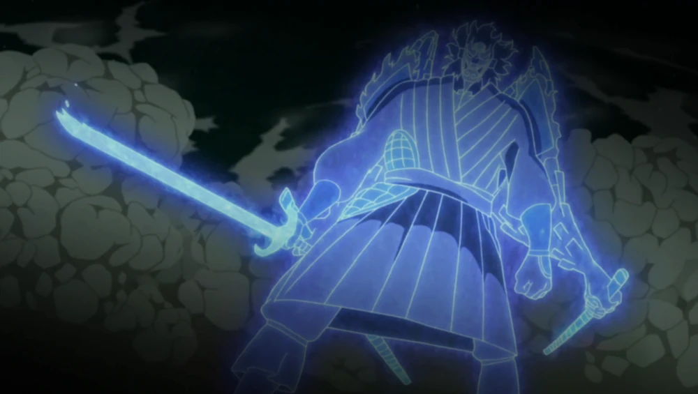
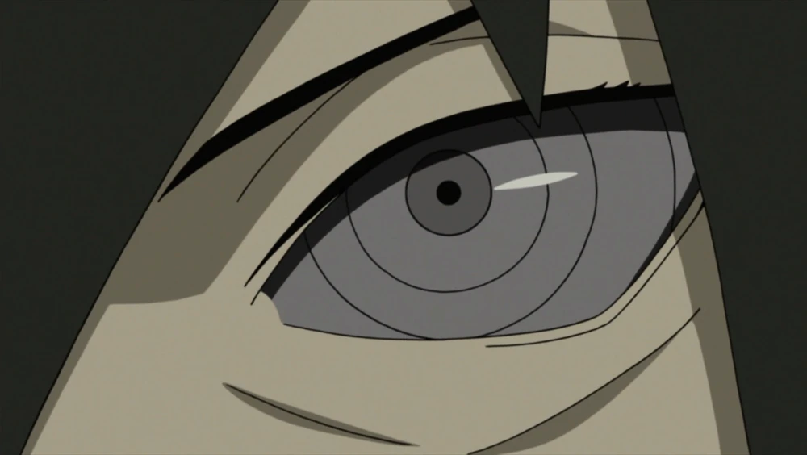
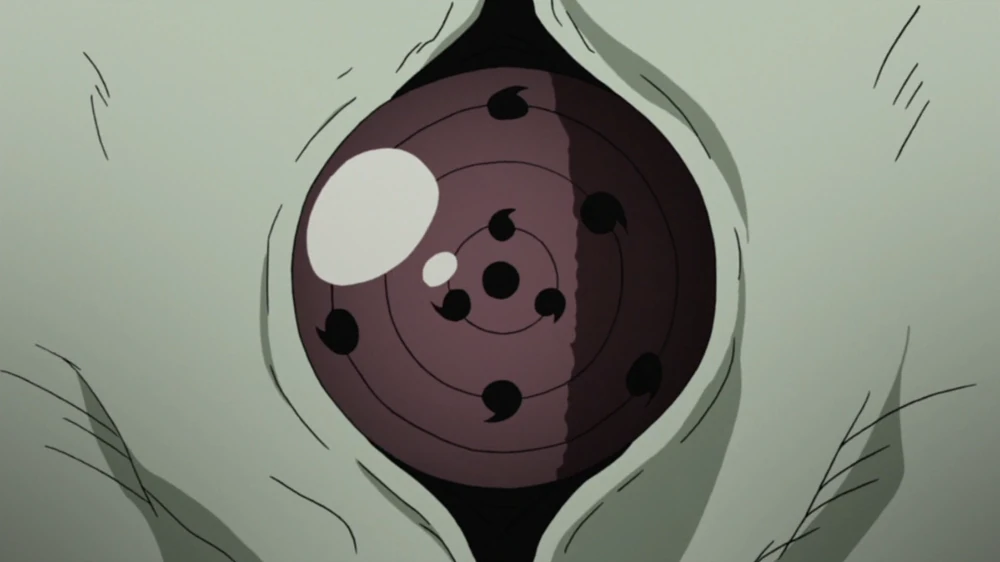
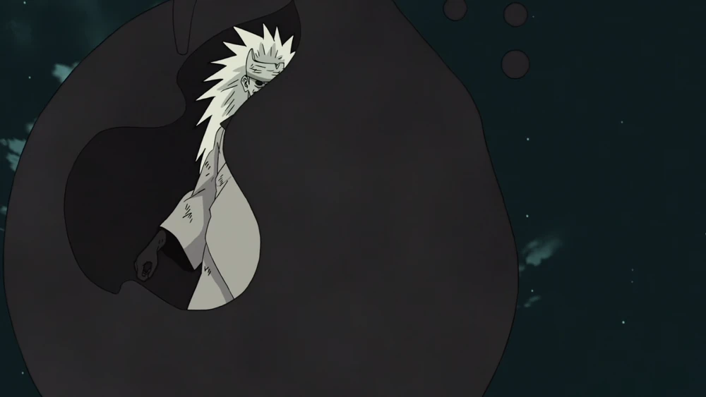

Madara Uchiha (うちはマダラ, Uchiha Madara) was the legendary leader of the Uchiha Clan and a reincarnation of Indra Ōtsutsuki. He founded Konohagakure alongside his childhood friend and rival, Hashirama Senju, with the intention of bringing about an era of peace. When the two couldn't agree on how to achieve that peace, they fought for control of the village, a conflict which ended in Madara's death. Madara, however, rewrote his death and went into hiding to work on his own plans. Unable to complete it in his natural life, he entrusted his knowledge and plans to Obito Uchiha shortly before his actual death. Years later, Madara would be revived during the Fourth Shinobi World War with his goal involving the Infinite Tsukuyomi having reached fruition, only to be upended by Black Zetsu and its own ancient machinations. Finally, realising the error of his ways, he made amends with Hashirama before his final death.
1. Susanoo

Having awakened both his Mangekyō, Madara could use Susanoo, which he could use even without his eyes in their sockets. The ribcage could withstand an Ultra-Big Ball Rasengan and A's strength. He could produce a legged humanoid Susanoo. His Susanoo wielded up to four undulating blades that could be thrown and controlled remotely.[109] He could also fire Yasaka Magatama of varying sizes. When fully produced, Madara would hover inside Susanoo to grant him a greater range of movement. With his eyesight deteriorating from overuse, he replaced his original eyes with Izuna's, restoring his vision and gaining the Eternal Mangekyō Sharingan. With it, he could "stabilise" Susanoo into its Complete Body form, causing it to resemble a tengu with outer armour that was nearly impenetrable. A secondary pair of arms wielded sheathed katana which could be used to bisect mountains with their mere shockwaves. According to himself, its power was comparable to that of the tailed beasts, and no one was said to have lived to see it a second time.
2.Rinnegan

Years after infusing himself with Hashirama's DNA and unknowingly mixing Indra's and Asura's chakra, Madara's Sharingan evolved into the Rinnegan. As the eyes' original owner, only he could use them to their maximum power. He was able to switch between both dōjutsu. With the Rinnegan, Madara could use all of the abilities of the Six Paths Technique, such as the Preta Path to absorb chakra and the Deva Path to perform Chibaku Tensei. He could also use the Outer Path to create chakra chains that could restrain all nine tailed beasts and black receivers for various melee and supplementary purposes. Through the usage of his Rinnegan with that of his Sharingan, Madara could summon meteorites to cause widespread destruction.
3. Rinne Sharingan

As the Ten-Tails' jinchūriki and with both of his Rinnegan, Madara approached the moon and awakened a Rinne Sharingan on his forehead, which he could use to reflect the eye onto the moon, allowing him to cast the Infinite Tsukuyomi and trap everyone, aside from himself, in an infinite genjutsu.
4. Jinchuriki Transformation

After sealing the Ten-Tails into his body, Madara had immediately gained complete control over the beast, which was stronger than when it was first revived due to having all of the Eight-Tails and half of the Nine-Tails' chakra sealed in it. With his transformation, Madara obtained Truth-Seeking Balls that floated behind him in a circular formation, which were comprised of the five basic nature transformations and Yin–Yang Release. Their chakra is highly malleable and versatile, such that he could use them as high speed projectiles, protective barriers, and various weapons, such as a shakujō. With Yin–Yang Release, the balls could nullify all ninjutsu they came into contact with.
For more information about Madara Uchiha:
Click Here